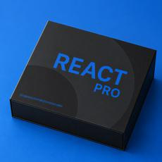
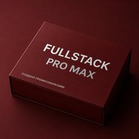

 | Больше возможностей во frontend React (pro) |
Понравилось собирать интерфейс на Vue? Попробуйте React и посмотрите, как те же задачи решаются в другой библиотеке. В программе есть вёрстка по макетам, JavaScript, Tailwind, Sass и проекты на React.
Большая программа, в которую входят и основы HTML, CSS и JavaScript. Сравните темы со своим опытом.
Посмотреть программу ↗ | Собирать сайты на другом наборе технологий FullStack Pro MAX |
Хотите работать не только с Go и Vue? Здесь другой маршрут от макета до сайта. HTML, CSS, Figma и JavaScript для интерфейса, PHP и MySQL для серверной части. Есть отдельные разделы с проектами.
Курс начинается с основ. Темы Git и SQL вам уже знакомы, а PHP и MySQL дают другой вариант серверной разработки.
Посмотреть программу ↗